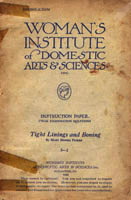
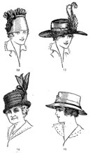
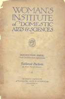
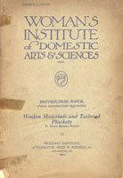
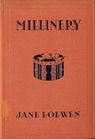
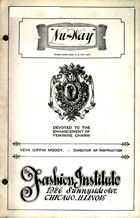
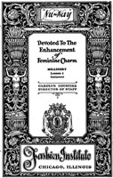

1920-1929
1922
Tight Linings and Boning, Woman's Institute of Domestic Arts & Sciences, by Mary Brooks Picken
In addition to instructions on padding your dress form and fitting it with a tight lining, this book covers how to properly bone a bodice, including how to finish the ends of the bones, and what is meant by "springing the bone." (44 pages)
Millinery
by Charlotte Rankin Aiken, B.A.
Much information about the buying of hats, especially about "the colors that are becoming and of the lines which bring out the best features of the face." Also the commercial production of hats, from the preparation of raw materials to display in the millinery showroom. (181 pages)
Tailored Pockets, Woman's Institute of Domestic Arts & Sciences, by Mary Brooks Picken
All about pockets: stand, flap, welt , plain patch, patch with strap and flap, box-plaited patch, and bound. Also, a section on tailors' cushions and press boards. (40 pages)
1923
Woolen Materials and Tailored Plackets, Woman's Institute of Domestic Arts & Sciences, by Mary Brooks Picken
How to select, press, and pre-shrink your woolen material; how to remove shine, should you press it incorrectly. Detailed instructions on how to construct an assortment of tailored plackets. (45 pages)
1925
Millinery
by Jane Loewen
Detailed instructions on making hats, including wire frames, molded frames, pattern frames, materials, trimmings, and even cleaning and remodeling. Plus the obligatory chapters on color and line harmony. (213 pages)
1926
The Nu-Way Course in Fashionable Clothes Making
Correspondence course with complete instructions for learning the art of clothes-making. Includes 56+ lessons covering everything you could want to know about sewing in the 1920's from basic stitches to opening your own dress shop. Lavishly illustrated.
Go to Table of Contents (short) - Lists lesson titles
Go to Table of Contents (long) - Lists lesson titles and topics
Typos for this work
1928
The Nu-Way Course in Millinery and Hat Design
Correspondence course with complete instructions for learning the art of millinery and hat design. Includes 25 lessons on hat design and construction with many illustrations of hats and hairstyles from 1928.
Go to Table of Contents (short) - Lists lesson titles
Go to Table of Contents (long) - Lists lesson titles and topics
Typos for this work
Check the candidates' page to see what else will eventually be available.